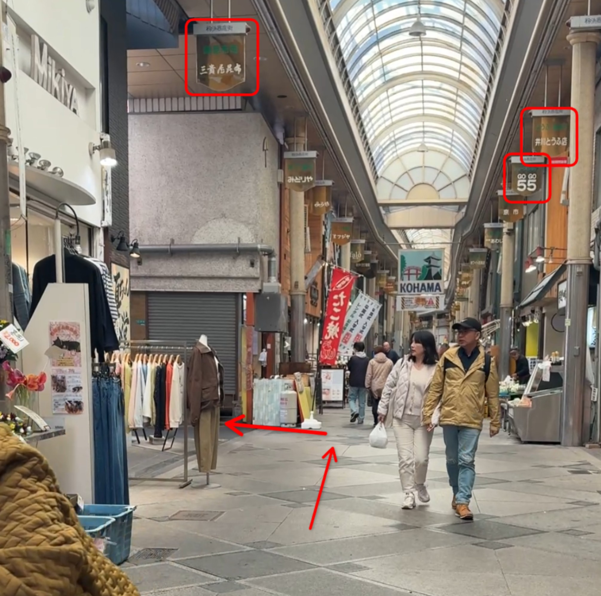
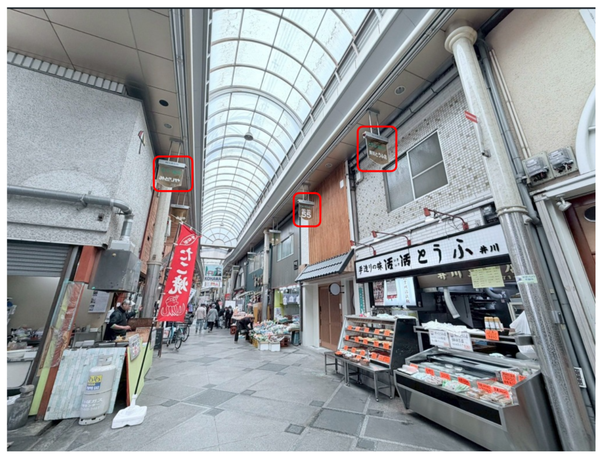
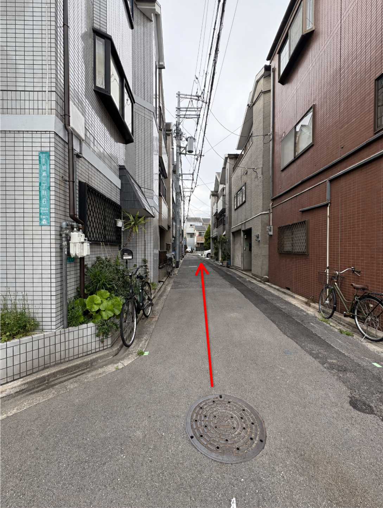

🚉 住吉大社駅を出発 / Departure from Station
JA住吉大社駅の改札を出ます。
ENExit the ticket gate of Sumiyoshitaisha Station.
ZH从住吉大社站检票口出来。
KO스미요시타이샤 역 개찰구를 나옵니다。

🏪 商店街を直進 / Go Straight Down the Street
JA駅を出て、アーケードのある粉浜商店街を直進します。
ENExit the station and go straight through Kohama Shopping Street with the arcade.
ZH出站后，沿着有拱廊的粉滨商店街直行。
KO역을 나와 아케이드가 있는 고하마 상점가를 직진합니다。


↩️ 左に曲がる / Turn Left
JA粉浜商店街を直進すると右側に「井川とうふ店」が出てきます。そこを左に曲がります。
ENGo straight through Kohama Shopping Street until you see "Igawa Tofu Shop" on your right. Turn left there.
ZH沿着粉滨商店街直行，看到右侧的「井川豆腐店」时向左转。
KO고하마 상점가를 직진하다가 오른쪽에 「이가와 두부점」이 보이면 왼쪽으로 돕니다。


↪️ 右に曲がる / Turn Right
JA左折後、そのまま直進して曲がり角（住宅街の交差点）を右に曲がります。
ENAfter turning left, go straight and turn right at the corner (intersection in the residential area).
ZH左转后，继续直行，在拐角处（住宅区的十字路口）向右转。
KO좌회전 후 직진하여 모퉁이(주택가 교차로)에서 오른쪽으로 돕니다。

👀 施設が見えます / Property is in Sight
JAそのまま直進すると、右側に民泊施設（目的地）が見えてきます。
ENGo straight ahead, and you will see the accommodation (destination) on your right.
ZH继续直行，您将在右侧看到民宿设施（目的地）。
KO그대로 직진하면 오른쪽에 숙박 시설(목적지)이 보입니다。

🏠 建物の外観 / Exterior of the Property
JA黒と茶色の外壁の建物、1階が宿泊施設となります。
ENThe accommodation is on the first floor of the black and brown building.
ZH住宿设施位于这栋黑褐色建筑的一楼。
KO검정색과 갈색 건물의 1층이 숙박 시설입니다。

🚶 玄関への通路 / Pathway to Entrance
JA建物の脇にある通路を奥へと進みます。
ENGo down the passage beside the building.
ZH沿着建筑物旁边的通道往里走。
KO건물 옆에 있는 통로를 따라 안으로 들어갑니다。

📦 キーボックスの場所 / Key Box Location
JA通路の奥、壁面にキーボックスが設置されています。
ENThe key box is located on the wall at the end of the passage.
ZH密码盒位于通道尽头的墙上。
KO통로 안쪽 벽면에 키 박스가 설치되어 있습니다。

🔑 鍵の取り出し / Take the Key
JA暗証番号を入力し、鍵を取り出して入室してください。
ENEnter your PIN code, take out the key, and enter the room.
ZH输入密码，取出钥匙并进入房间。
KO비밀번호를 입력하고 열쇠를 꺼내 방에 들어가세요。